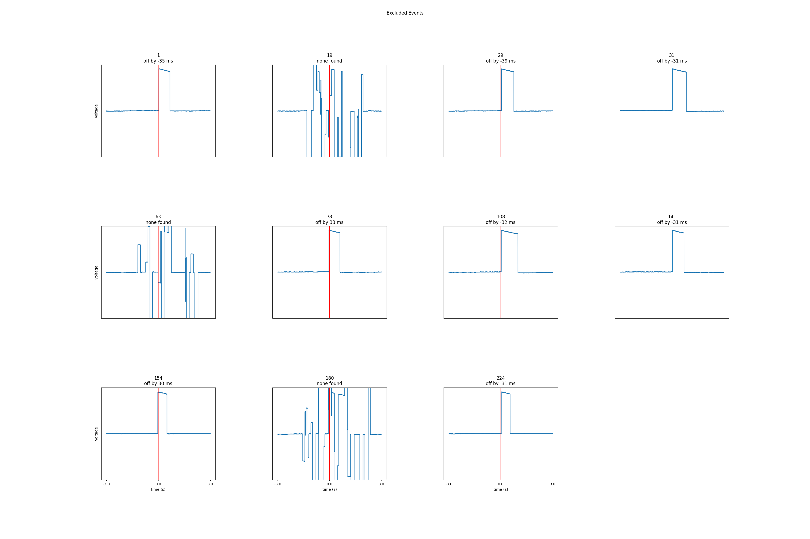

Note
Click here to download the full example code
Find Photodiode On and Off Events¶
In this example, we use pd-parser to find photodiode events and
align both the onset of the deflection and the cessation to
to behavior.
# Authors: Alex Rockhill <aprockhill@mailbox.org>
#
# License: BSD (3-clause)
Simulate data and use it to make a raw object
We’ll make an mne.io.Raw object so that we can save out some random data with a photodiode event channel in it in fif format (a commonly used electrophysiology data format).
import os.path as op
import numpy as np
import mne
from mne.utils import _TempDir
import pd_parser
from pd_parser.parse_pd import _load_data
import matplotlib.pyplot as plt
import matplotlib.cm as cm
out_dir = _TempDir()
# simulate photodiode data
np.random.seed(29)
n_events = 300
# let's make our photodiode events on random uniform from 0.5 to 1 second
n_secs_on = np.random.random(n_events) * 0.5 + 0.5
prop_corrupted = 0.01
raw, beh, events, corrupted_indices = \
pd_parser.simulate_pd_data(n_events=n_events, n_secs_on=n_secs_on,
prop_corrupted=prop_corrupted)
# make fake electrophysiology data
info = mne.create_info(['ch1', 'ch2', 'ch3'], raw.info['sfreq'],
['seeg'] * 3)
raw2 = mne.io.RawArray(np.random.random((3, raw.times.size)) * 1e-6, info)
raw.add_channels([raw2])
raw.info['line_freq'] = 60 # for bids
# add some offsets to the behavior so it's a bit more realistic
offsets = np.random.randn(n_events) * 0.01
beh['time'] = np.array(beh['time']) + offsets
# save to disk as required by ``pd-parser``
fname = op.join(out_dir, 'sub-1_task-mytask_raw.fif')
raw.save(fname)
Creating RawArray with float64 data, n_channels=1, n_times=2042100
Range : 0 ... 2042099 = 0.000 ... 2042.099 secs
Ready.
Creating RawArray with float64 data, n_channels=3, n_times=2042100
Range : 0 ... 2042099 = 0.000 ... 2042.099 secs
Ready.
Writing /tmp/tmp_mne_tempdir_xzf6z3xo/sub-1_task-mytask_raw.fif
Closing /tmp/tmp_mne_tempdir_xzf6z3xo/sub-1_task-mytask_raw.fif
[done]
Find the photodiode events relative to the behavioral timing of interest
This function will use the default parameters to find and align the photodiode events, excluding events that were off. One percent of the 300 events (3) were corrupted as shown in the plots and some were too far off from large offsets that we’re going to exclude them.
pd_parser.parse_pd(fname, pd_event_name='Stim On', beh=beh,
pd_ch_names=['pd'], beh_key='time',
max_len=1.5) # none are on longer than 1.5 seconds

- 
Reading in /tmp/tmp_mne_tempdir_xzf6z3xo/sub-1_task-mytask_raw.fif
Opening raw data file /tmp/tmp_mne_tempdir_xzf6z3xo/sub-1_task-mytask_raw.fif...
Range : 0 ... 2042099 = 0.000 ... 2042.099 secs
Ready.
Reading 0 ... 2042099 = 0.000 ... 2042.099 secs...
Finding photodiode events
0%| | 0/722 [00:00<?, ?it/s]
92%|#########1| 664/722 [00:00<00:00, 6629.72it/s]
100%|##########| 722/722 [00:00<00:00, 6643.06it/s]
300 up-deflection photodiode candidate events found
Checking best alignments
0%| | 0/300 [00:00<?, ?it/s]
1%|1 | 3/300 [00:00<00:14, 20.77it/s]
2%|2 | 6/300 [00:00<00:13, 21.25it/s]
3%|3 | 9/300 [00:00<00:14, 20.12it/s]
4%|4 | 12/300 [00:00<00:14, 20.37it/s]
5%|5 | 15/300 [00:00<00:13, 20.77it/s]
6%|6 | 18/300 [00:00<00:13, 20.87it/s]
7%|7 | 21/300 [00:01<00:13, 20.05it/s]
8%|8 | 24/300 [00:01<00:13, 19.79it/s]
9%|8 | 26/300 [00:01<00:13, 19.64it/s]
10%|9 | 29/300 [00:01<00:13, 20.10it/s]
11%|# | 32/300 [00:01<00:13, 19.61it/s]
12%|#1 | 35/300 [00:01<00:13, 20.13it/s]
13%|#2 | 38/300 [00:01<00:12, 20.37it/s]
14%|#3 | 41/300 [00:02<00:12, 20.58it/s]
15%|#4 | 44/300 [00:02<00:12, 19.92it/s]
15%|#5 | 46/300 [00:02<00:12, 19.77it/s]
16%|#6 | 48/300 [00:02<00:12, 19.42it/s]
17%|#7 | 51/300 [00:02<00:12, 20.48it/s]
18%|#8 | 54/300 [00:02<00:12, 19.85it/s]
19%|#9 | 57/300 [00:02<00:12, 20.11it/s]
20%|## | 60/300 [00:02<00:11, 20.31it/s]
21%|##1 | 63/300 [00:03<00:11, 20.37it/s]
22%|##2 | 66/300 [00:03<00:11, 19.90it/s]
23%|##2 | 68/300 [00:03<00:11, 19.62it/s]
24%|##3 | 71/300 [00:03<00:11, 20.06it/s]
25%|##4 | 74/300 [00:03<00:11, 20.37it/s]
26%|##5 | 77/300 [00:03<00:10, 20.47it/s]
27%|##6 | 80/300 [00:03<00:10, 20.58it/s]
28%|##7 | 83/300 [00:04<00:10, 20.67it/s]
29%|##8 | 86/300 [00:04<00:10, 20.10it/s]
30%|##9 | 89/300 [00:04<00:10, 19.62it/s]
30%|### | 91/300 [00:04<00:10, 19.51it/s]
31%|###1 | 94/300 [00:04<00:10, 20.55it/s]
32%|###2 | 97/300 [00:04<00:10, 20.01it/s]
33%|###3 | 100/300 [00:04<00:09, 20.31it/s]
34%|###4 | 103/300 [00:05<00:09, 20.37it/s]
35%|###5 | 106/300 [00:05<00:09, 19.93it/s]
36%|###6 | 108/300 [00:05<00:09, 19.75it/s]
37%|###6 | 110/300 [00:05<00:09, 19.57it/s]
38%|###7 | 113/300 [00:05<00:09, 20.00it/s]
38%|###8 | 115/300 [00:05<00:09, 19.80it/s]
39%|###9 | 118/300 [00:05<00:08, 20.89it/s]
40%|#### | 121/300 [00:06<00:08, 20.30it/s]
41%|####1 | 124/300 [00:06<00:08, 21.18it/s]
42%|####2 | 127/300 [00:06<00:08, 20.94it/s]
43%|####3 | 130/300 [00:06<00:08, 20.00it/s]
44%|####4 | 133/300 [00:06<00:08, 20.62it/s]
45%|####5 | 136/300 [00:06<00:07, 20.64it/s]
46%|####6 | 139/300 [00:06<00:07, 20.77it/s]
47%|####7 | 142/300 [00:07<00:07, 20.73it/s]
48%|####8 | 145/300 [00:07<00:07, 20.97it/s]
49%|####9 | 148/300 [00:07<00:07, 21.25it/s]
50%|##### | 151/300 [00:07<00:07, 20.52it/s]
51%|#####1 | 154/300 [00:07<00:07, 20.30it/s]
52%|#####2 | 157/300 [00:07<00:07, 19.65it/s]
53%|#####3 | 159/300 [00:07<00:07, 19.50it/s]
54%|#####4 | 162/300 [00:08<00:06, 19.76it/s]
55%|#####4 | 164/300 [00:08<00:06, 19.73it/s]
55%|#####5 | 166/300 [00:08<00:07, 18.62it/s]
56%|#####6 | 169/300 [00:08<00:06, 18.83it/s]
57%|#####6 | 171/300 [00:08<00:06, 19.04it/s]
58%|#####7 | 173/300 [00:08<00:06, 19.27it/s]
58%|#####8 | 175/300 [00:08<00:06, 18.67it/s]
59%|#####9 | 178/300 [00:08<00:06, 19.16it/s]
60%|###### | 181/300 [00:09<00:06, 18.94it/s]
61%|######1 | 183/300 [00:09<00:06, 17.98it/s]
62%|######1 | 185/300 [00:09<00:06, 18.23it/s]
62%|######2 | 187/300 [00:09<00:06, 18.05it/s]
63%|######3 | 190/300 [00:09<00:05, 19.37it/s]
64%|######4 | 192/300 [00:09<00:05, 19.02it/s]
65%|######4 | 194/300 [00:09<00:05, 18.35it/s]
65%|######5 | 196/300 [00:09<00:05, 18.53it/s]
66%|######6 | 198/300 [00:09<00:05, 17.93it/s]
67%|######6 | 200/300 [00:10<00:05, 17.25it/s]
67%|######7 | 202/300 [00:10<00:05, 16.93it/s]
68%|######8 | 204/300 [00:10<00:05, 17.35it/s]
69%|######8 | 206/300 [00:10<00:05, 16.95it/s]
69%|######9 | 208/300 [00:10<00:05, 17.62it/s]
70%|####### | 211/300 [00:10<00:04, 18.18it/s]
71%|#######1 | 214/300 [00:10<00:04, 18.70it/s]
72%|#######2 | 217/300 [00:10<00:04, 19.94it/s]
73%|#######3 | 220/300 [00:11<00:04, 19.62it/s]
74%|#######4 | 222/300 [00:11<00:04, 19.33it/s]
75%|#######5 | 225/300 [00:11<00:03, 19.97it/s]
76%|#######5 | 227/300 [00:11<00:03, 19.27it/s]
77%|#######6 | 230/300 [00:11<00:03, 19.28it/s]
77%|#######7 | 232/300 [00:11<00:03, 19.06it/s]
78%|#######8 | 234/300 [00:11<00:03, 18.42it/s]
79%|#######8 | 236/300 [00:12<00:03, 18.18it/s]
79%|#######9 | 238/300 [00:12<00:03, 17.82it/s]
80%|######## | 240/300 [00:12<00:03, 18.36it/s]
81%|######## | 242/300 [00:12<00:03, 18.69it/s]
82%|########1 | 245/300 [00:12<00:02, 18.34it/s]
82%|########2 | 247/300 [00:12<00:03, 15.83it/s]
83%|########2 | 249/300 [00:12<00:03, 16.23it/s]
84%|########3 | 251/300 [00:12<00:03, 16.27it/s]
84%|########4 | 253/300 [00:13<00:02, 16.64it/s]
85%|########5 | 255/300 [00:13<00:02, 16.81it/s]
86%|########5 | 257/300 [00:13<00:02, 15.50it/s]
86%|########6 | 259/300 [00:13<00:02, 16.10it/s]
87%|########7 | 261/300 [00:13<00:02, 15.26it/s]
88%|########7 | 263/300 [00:13<00:02, 14.32it/s]
88%|########8 | 265/300 [00:13<00:02, 14.33it/s]
89%|########9 | 267/300 [00:14<00:02, 12.94it/s]
90%|########9 | 269/300 [00:14<00:02, 13.52it/s]
90%|######### | 271/300 [00:14<00:01, 14.70it/s]
91%|#########1| 274/300 [00:14<00:01, 16.27it/s]
92%|#########2| 276/300 [00:14<00:01, 15.61it/s]
93%|#########2| 278/300 [00:14<00:01, 15.59it/s]
93%|#########3| 280/300 [00:14<00:01, 15.48it/s]
94%|#########4| 283/300 [00:14<00:00, 17.04it/s]
95%|#########5| 285/300 [00:15<00:00, 16.52it/s]
96%|#########5| 287/300 [00:15<00:00, 17.15it/s]
96%|#########6| 289/300 [00:15<00:00, 17.73it/s]
97%|#########7| 291/300 [00:15<00:00, 17.91it/s]
98%|#########8| 294/300 [00:15<00:00, 18.73it/s]
99%|#########8| 296/300 [00:15<00:00, 18.83it/s]
99%|#########9| 298/300 [00:15<00:00, 18.87it/s]
100%|##########| 300/300 [00:15<00:00, 18.88it/s]
Best alignment is with the first behavioral event shifted 0.03 s relative to the first synchronization event and has errors: min -39.13 ms, q1 -9.96 ms, med -0.03 ms, q3 11.16 ms, max 33.98 ms, 3 missed events
Excluding events that have zero close synchronization events or more than one synchronization event within `max_len` time
1 off by -35 ms
19 none found
29 off by -39 ms
31 off by -31 ms
63 none found
78 off by 33 ms
108 off by -32 ms
141 off by -31 ms
154 off by 30 ms
180 none found
224 off by -31 ms
(<Annotations | 289 segments: Stim On (289)>, [12270, 'n/a', 24994, 32081, 38711, 45439, 51458, 58189, 65602, 72878, 79973, 86136, 93477, 100763, 107011, 113960, 119991, 126166, 132641, 'n/a', 146016, 153243, 159760, 166238, 172405, 178531, 185600, 192499, 198583, 'n/a', 211906, 'n/a', 226255, 233158, 239987, 247411, 254891, 261398, 267758, 274953, 281049, 287596, 293701, 300180, 306286, 312721, 319906, 327264, 334453, 341296, 348220, 354762, 361015, 367669, 374768, 380862, 386893, 394049, 400499, 407551, 414653, 422052, 428652, 'n/a', 442400, 449547, 456526, 463742, 470705, 478141, 484642, 491749, 499174, 505676, 512593, 519142, 525834, 531947, 'n/a', 545115, 551794, 558728, 565838, 572466, 579017, 585271, 592462, 599712, 606813, 614126, 621098, 628142, 634432, 641583, 648084, 654741, 661219, 668071, 675059, 681922, 688399, 694726, 701993, 708446, 715103, 721240, 727691, 733820, 'n/a', 747400, 754861, 761799, 768203, 775188, 782128, 789366, 796167, 803534, 810157, 816586, 823365, 830749, 837835, 844576, 851322, 858295, 864967, 871793, 879250, 886649, 893910, 900101, 906936, 913486, 920854, 927325, 934721, 941079, 947710, 955150, 962043, 'n/a', 976249, 982591, 989660, 996442, 1003200, 1009405, 1015622, 1023016, 1030450, 1037899, 1044436, 1050505, 'n/a', 1064440, 1071412, 1077491, 1083840, 1090899, 1096982, 1104252, 1111736, 1118108, 1124189, 1131659, 1138810, 1145491, 1152208, 1159581, 1166115, 1172195, 1179116, 1185585, 1192607, 1200029, 1206570, 1212940, 1219019, 1226266, 'n/a', 1239812, 1246871, 1254238, 1261460, 1267746, 1274010, 1281452, 1287889, 1295075, 1301331, 1307780, 1314790, 1321163, 1328291, 1335610, 1342091, 1348539, 1354581, 1361215, 1367313, 1374175, 1381207, 1388059, 1394965, 1401864, 1409218, 1416015, 1423307, 1429835, 1436046, 1442379, 1449569, 1455914, 1463073, 1470427, 1477244, 1483459, 1490394, 1496963, 1504326, 1510661, 1517012, 1523736, 'n/a', 1536758, 1543320, 1550322, 1557028, 1563118, 1569741, 1576365, 1583036, 1589072, 1595483, 1602909, 1610234, 1617645, 1624783, 1631434, 1638840, 1645291, 1652181, 1659062, 1665723, 1672099, 1678595, 1685559, 1691985, 1698504, 1705035, 1711522, 1718765, 1725584, 1731612, 1738724, 1745477, 1752645, 1759387, 1765853, 1773112, 1779372, 1785789, 1792515, 1799805, 1805978, 1812486, 1819284, 1826302, 1832460, 1839593, 1846428, 1853204, 1859775, 1866247, 1873583, 1881074, 1887337, 1893654, 1900655, 1907802, 1915036, 1921490, 1927804, 1933913, 1940477, 1947321, 1954630, 1960680, 1966814, 1973794, 1980801, 1986987, 1993132, 1999174, 2006147, 2012567, 2018928, 2025925, 2032107])
Find cessations of the photodiode deflections
Another piece of information in the photodiode channel is the cessation of the events. Let’s find those and add them to the events.
pd_parser.add_pd_off_events(fname, off_event_name='Stim Off', max_len=1.5)
Reading in /tmp/tmp_mne_tempdir_xzf6z3xo/sub-1_task-mytask_raw.fif
Opening raw data file /tmp/tmp_mne_tempdir_xzf6z3xo/sub-1_task-mytask_raw.fif...
Range : 0 ... 2042099 = 0.000 ... 2042.099 secs
Ready.
Reading 0 ... 2042099 = 0.000 ... 2042.099 secs...
Finding photodiode events
0%| | 0/722 [00:00<?, ?it/s]
77%|#######7 | 558/722 [00:00<00:00, 5574.05it/s]
100%|##########| 722/722 [00:00<00:00, 5855.06it/s]
300 up-deflection photodiode candidate events found
Overwriting existing file.
<Annotations | 578 segments: Stim Off (289), Stim On (289)>
Check recovered event lengths and compare to the simulation ground truth
Let’s load in the on and off events and plot their difference compared to
the n_secs_on event lengths we used to simulate.
The plot below show the differences between the simulated
deflection event lengths on the x axis scattered against the
recovered event lengths on the y axis. The identity line (the line with 1:1
correspondance) is not shown as it would occlude the plotted data; the
the lengths are recovered within 1 millisecond. Note that the colors are
arbitrary and are only used to increase contrast and ease of visualization.
annot, pd_ch_names, beh = _load_data(fname)
raw.set_annotations(annot)
events, event_id = mne.events_from_annotations(raw)
on_events = events[events[:, 2] == event_id['Stim On']]
off_events = events[events[:, 2] == event_id['Stim Off']]
recovered = (off_events[:, 0] - on_events[:, 0]) / raw.info['sfreq']
not_corrupted = [s != 'n/a' for s in beh['pd_parser_sample']]
ground_truth_not_corrupted = n_secs_on[not_corrupted]
fig, ax = plt.subplots()
ax.scatter(ground_truth_not_corrupted, recovered,
s=1, color=cm.rainbow(np.linspace(0, 1, len(recovered))))
ax.set_title('Photodiode offset eventfidelity of recovery')
ax.set_xlabel('ground truth duration (s)')
ax.set_ylabel('recovered duration (s)')
print('Mean difference in the recovered from simulated length is {:.3f} '
'milliseconds'.format(
1000 * abs(ground_truth_not_corrupted - recovered).mean()))

Reading in /tmp/tmp_mne_tempdir_xzf6z3xo/sub-1_task-mytask_raw.fif
Opening raw data file /tmp/tmp_mne_tempdir_xzf6z3xo/sub-1_task-mytask_raw.fif...
Range : 0 ... 2042099 = 0.000 ... 2042.099 secs
Ready.
Used Annotations descriptions: ['Stim Off', 'Stim On']
Mean difference in the recovered from simulated length is 0.253 milliseconds
Total running time of the script: ( 0 minutes 20.497 seconds)